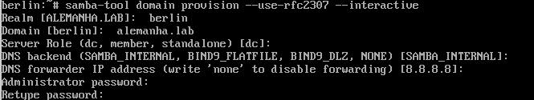
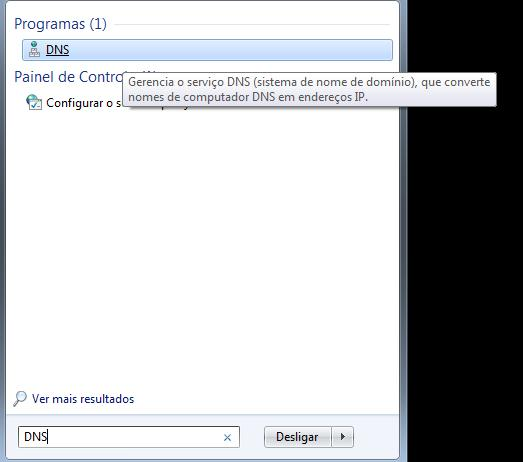
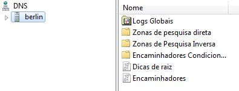
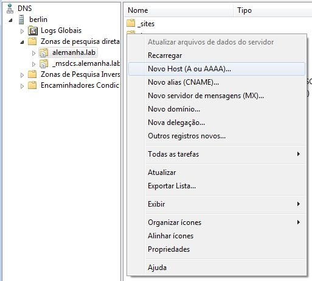
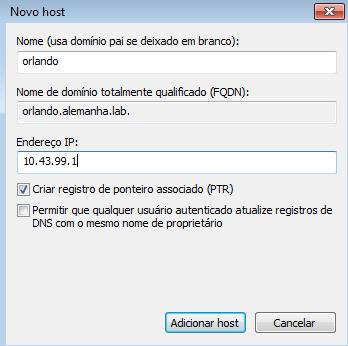
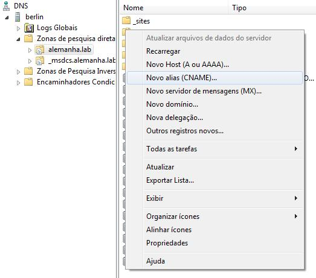
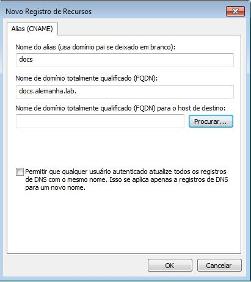
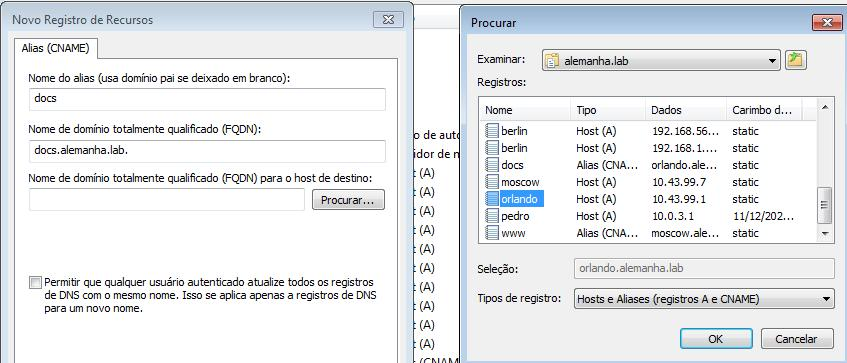
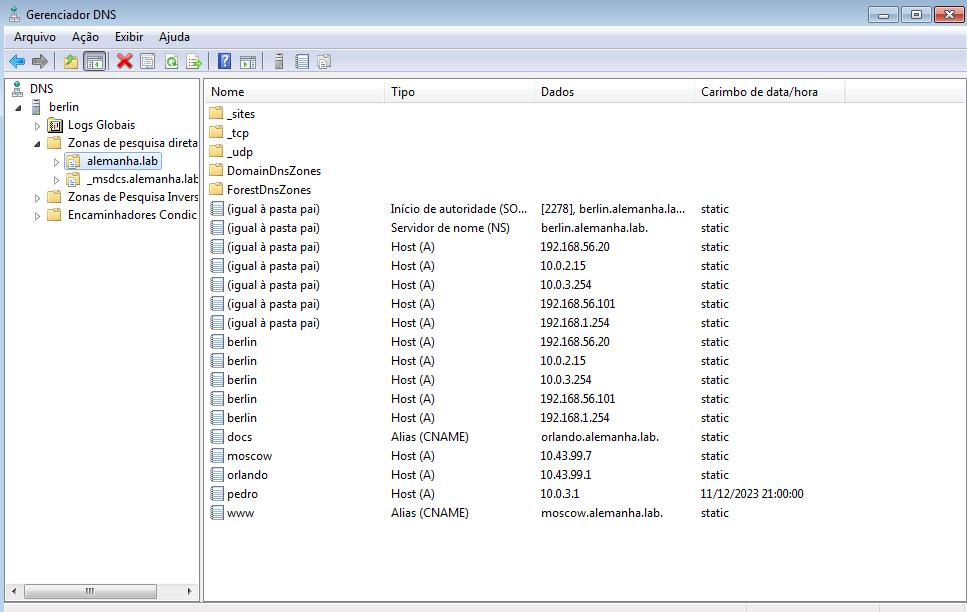

DNS
Instalação
- samba-dc
- krb5
- smbclient
Configuração
1º - Vamos configurar o nome de nossa máquina com o nome de nosso dominio em: (/etc/hostname)
EX: berlin.alemanha.lab
2º - Agora configura a linha do local host em: (/etc/hosts)
EX: berlin.alemanha.lab
2.1º - Faça um backup do arquivo smb.conf que está em: (/etc/samba/smb.conf)
2.2º - Desative o samba antes de iniciar o passo (3)
- Alpine (rc-service samba stop)
- Baseados no debian (systemctl stop samba)
3º - Após isso vamos configura nosso domínio usando:
- samba-tool domain provision --use-rfc2307 --interactive
4º Essa são as etapas da configuração (O que está entre [ ] e o padrão só da ENTER)

4.1 Despois de configura vamo ativar o samba
- Alpine (rc-service samba start)
- Baseados no debian (systemctl start samba)
5º Após a configuração vamos para o windows (Ambas as máquinas devem está na mesma rede)

5.1º Vai abrir essa tela, digite o domínio criado

5.2º Quando entra, vai ficar assim:

6º Para criar um host A é assim: Clique com o direito na tela -> Novo Host (A ou AAAA)

6.1º Insira um nome e o ip de redirecionamento

6.2º Criando um cname

6.3º Atribuindo um cname: Informe um nome e clique em proucurar, encontre o A criado
 
7º Arquivo final

Teste